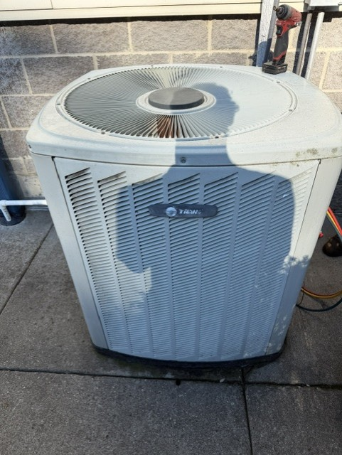
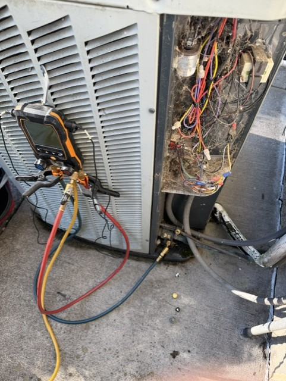
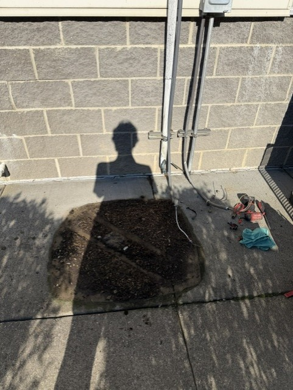
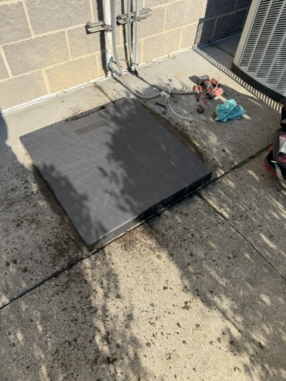
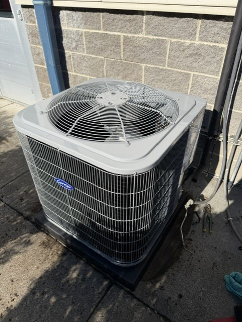
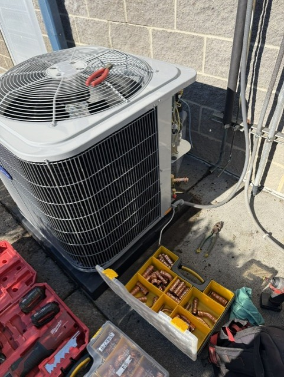
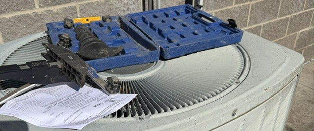
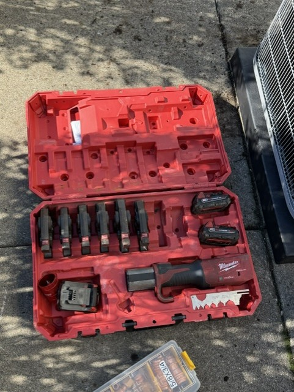
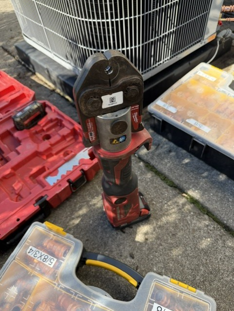
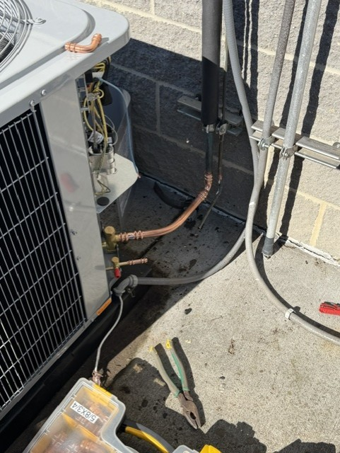
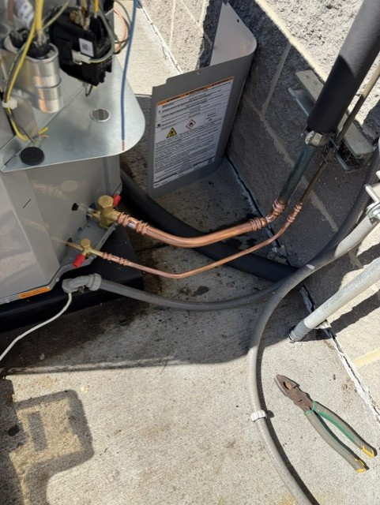
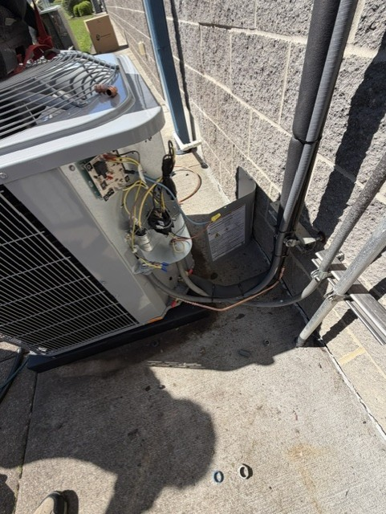

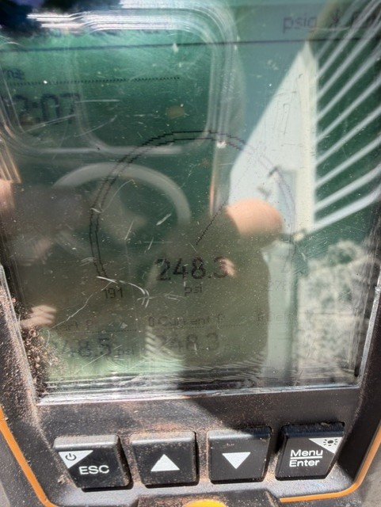
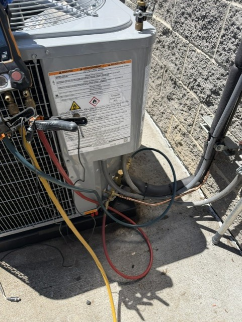
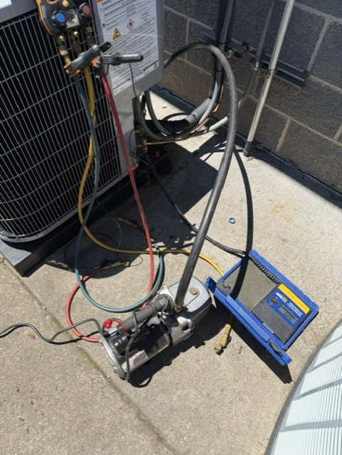
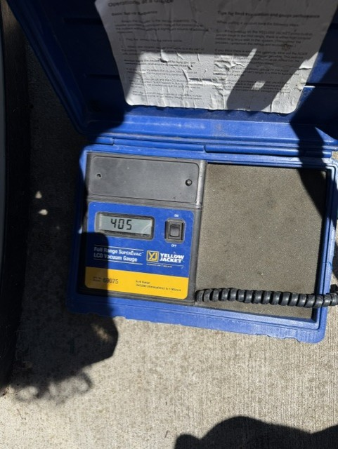
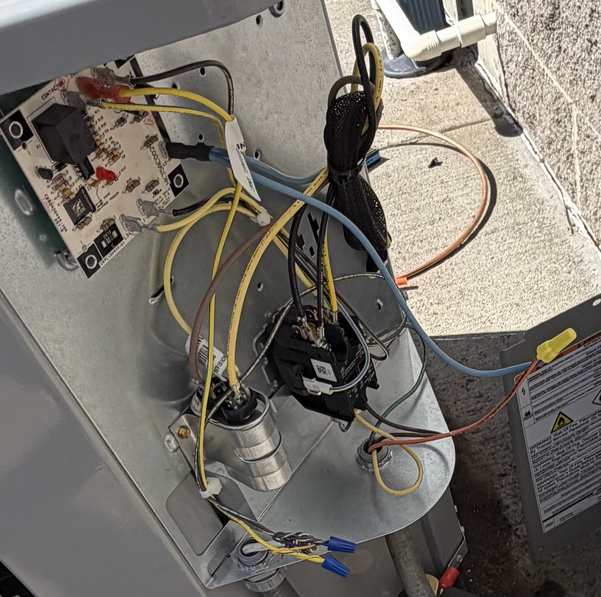

















Installed and serviced residential and commercial HVAC systems, gaining hands-on experience with mechanical systems, fabrication, and electrical connections.
Installed a 460V three-phase outdoor HVAC unit and completed system connections. Fabricated refrigerant piping using pressing and bending equipment to minimize oxidation and eliminate debris contamination.
Performed nitrogen pressure testing, vacuum evacuation, and refrigerant charging to verify proper system operation.